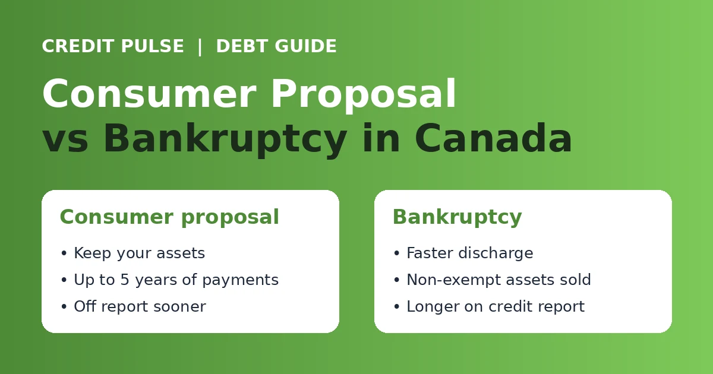

Consumer Proposal vs Bankruptcy: Which Is Right? in Canada

When debt has grown past the point where a budget or repayment plan can fix it, Canadians have two legal options under the Bankruptcy and Insolvency Act: a consumer proposal or personal bankruptcy. Both stop collection calls, both are filed through a Licensed Insolvency Trustee, and both affect your credit. They differ a lot in what you keep, what you pay, and how long the record follows you.
This guide explains how each one works, compares them side by side, and covers how to rebuild once you are through it. It is general education, not advice, so use it to prepare for a conversation with a Licensed Insolvency Trustee, not to replace one.
Quick answer: A consumer proposal lets you repay part of what you owe over up to five years and keep your assets. Bankruptcy usually ends sooner (as little as nine months for a first bankruptcy) but non-exempt assets can be sold, and it stays on your credit report longer. People with assets to protect or steady income often lean toward a proposal; people with few assets and little income may find bankruptcy simpler. Only a Licensed Insolvency Trustee (LIT) can file either one.
What is a consumer proposal?
A consumer proposal is a legally binding offer to your unsecured creditors to repay a portion of what you owe, usually in fixed monthly payments, over a maximum of five years. A Licensed Insolvency Trustee assesses your finances, prepares the offer and files it with the Office of the Superintendent of Bankruptcy. You can use a proposal if your total debts, not counting the mortgage on your home, are $250,000 or less.
Once it is filed, a stay of proceedings takes effect: most collection calls, lawsuits and wage garnishments from unsecured creditors stop, and interest on the included debts stops growing. Creditors then have 45 days to respond. The proposal is accepted automatically unless creditors holding at least 25% of the debt ask for a meeting, in which case creditors vote and a majority by dollar value decides. If it is accepted, it binds all of your unsecured creditors.
- You keep your assets, including your home, car and savings, as long as you keep paying any secured loans on them.
- Your payment is fixed and set in the agreement, so it does not rise if your income goes up.
- You must attend two financial counselling sessions.
- Missed payments matter. If you fall three payments behind, the proposal can be annulled and your creditors can resume collecting.
What is personal bankruptcy?
Bankruptcy is a legal process that releases you from most unsecured debts in exchange for giving your trustee any assets that are not protected by law. A first-time bankruptcy usually lasts 9 months, or 21 months if your income is above the government's “surplus income” threshold, in which case you also make monthly surplus income payments. A second bankruptcy lasts longer (24 or 36 months).
- Exempt assets are protected. Each province sets its own exemptions, which typically cover basic household goods, a modest vehicle, tools of your trade, and some equity in certain cases.
- Non-exempt assets can be sold by the trustee to repay creditors.
- RRSPs are generally protected, except contributions made in the 12 months before filing.
- Tax refunds for the year you file usually go to the trustee.
- You must attend two financial counselling sessions and meet your duties before you are discharged.
Consumer proposal vs bankruptcy: side-by-side
| Factor | Consumer proposal | Bankruptcy (first time) |
|---|---|---|
| Who files it | Licensed Insolvency Trustee | Licensed Insolvency Trustee |
| Debt limit | Up to $250,000, excluding your home mortgage | No limit |
| How long it lasts | Up to 5 years | 9 months, or 21 months with surplus income |
| Your assets | You keep them | Non-exempt assets can be sold |
| What you pay | A negotiated, fixed payment | Surplus income payments (if any) plus non-exempt assets |
| Collection calls and garnishments | Stop once filed | Stop once filed |
| Credit rating | Usually R7 | R9, the lowest rating |
| Time on your credit report | 3 years after completion, or 6 years after filing, whichever is sooner | 6 years after discharge (up to 7 with TransUnion in some provinces) |
General information for first-time filers. Rules can change; confirm details with a Licensed Insolvency Trustee.
How each option affects your credit report
Both options are reported to Equifax and TransUnion, and both lower your credit score. The difference is how severe the rating is and how long it stays.
According to the Financial Consumer Agency of Canada, both bureaus remove a consumer proposal 3 years after you pay off all the debts in the proposal, or 6 years after you sign it, whichever is sooner. A first bankruptcy is typically removed 6 years after your discharge, and TransUnion keeps it for 7 years in some provinces. A second bankruptcy stays for 14 years. You can read the full rules on the Government of Canada's credit report page.
A practical example: if you file a five-year proposal and finish on schedule, it falls off your report around the six-year mark from filing. If you finish early, it can come off sooner. That shorter window is one of the main reasons people choose a proposal when they can afford the payments.
Debts that neither option erases
Some obligations survive both a consumer proposal and bankruptcy, so plan for them either way:
- Secured debts such as a mortgage or car loan. Keep paying them if you want to keep the asset.
- Child and spousal support.
- Court fines and penalties, and debts arising from fraud.
- Student loans, if it has been less than seven years since you stopped being a student.
Also note that anyone who co-signed one of your debts remains responsible for it, even after you file.
Which option is right for you?
There is no single right answer, but these patterns are common:
| Your situation | Often a better fit | Why |
|---|---|---|
| You own a home with equity or other assets you want to keep | Consumer proposal | Assets are not surrendered |
| You have steady income above the surplus income threshold | Consumer proposal | Bankruptcy would last 21 months with monthly surplus payments anyway |
| You have few assets and low or irregular income | Bankruptcy | Shorter process and lower total cost |
| Your debts exceed $250,000 (excluding your mortgage) | Bankruptcy, or a Division I proposal | You are over the consumer proposal limit |
| You want the shortest time on your credit report | Consumer proposal, usually | Removed 3 years after completion or 6 years after filing |
Before either one, make sure a less drastic option will not work. If you can still cover your payments with a tighter budget, the strategies in our guide to debt repayment strategies in Canada may get you there. Run your numbers through the free Credit Pulse Debt Payoff Calculator to see your realistic debt-free date. If it is many years away even with every spare dollar, that is a sign to talk to a professional.
How to talk to a Licensed Insolvency Trustee
Licensed Insolvency Trustees are federally regulated by the Office of the Superintendent of Bankruptcy, and they are the only professionals who can file a consumer proposal or bankruptcy. First consultations are typically free. To make the most of yours, bring:
- A list of every debt: lender, balance, interest rate and monthly payment.
- Your income: recent pay stubs and your household's monthly take-home pay.
- Your monthly expenses. The free Budget Calculator helps you pull these together.
- A list of your assets: home, vehicles, savings, RRSPs and anything of significant value.
- Your questions, such as what you would pay under each option and how long each would take.
Be cautious of companies that promise to “settle” or “erase” debt for an upfront fee. They cannot file a proposal or bankruptcy themselves, and many refer clients to a trustee anyway.
Rebuilding after a proposal or bankruptcy
Filing is not the end of your credit story. Most people can begin rebuilding right away:
- Check both credit reports after you finish, and make sure included debts show as settled or discharged.
- Build a budget you can keep and an emergency fund, even a small one, so a surprise bill does not go on credit.
- Use a small amount of credit responsibly, such as a secured card paid in full every month.
- Keep learning. Our guide to budgeting tools for Canadians is a good next read.
Frequently asked questions
Is a consumer proposal better than bankruptcy?
Not always. A consumer proposal protects your assets and comes off your credit report sooner, but it usually takes longer to finish and you must keep up the payments. Bankruptcy can be faster and cheaper for people with few assets and low income. A Licensed Insolvency Trustee can compare both for your situation.
How long does a consumer proposal stay on your credit report?
Equifax and TransUnion remove a consumer proposal 3 years after you pay off all the debts in it, or 6 years after you sign it, whichever is sooner.
How long does bankruptcy stay on your credit report in Canada?
A first bankruptcy is typically removed 6 years after discharge, and TransUnion keeps it for 7 years in some provinces. A second bankruptcy stays for 14 years.
Can I keep my house in a consumer proposal?
Yes. In a consumer proposal you keep your assets, including your home, as long as you keep paying your mortgage. In bankruptcy, home equity above your province's exemption can be at risk.
Who can file a consumer proposal or bankruptcy in Canada?
Only a Licensed Insolvency Trustee, regulated by the Office of the Superintendent of Bankruptcy, can file either one.
What debts are not included?
Secured debts like mortgages and car loans, child and spousal support, court fines, debts from fraud, and student loans less than seven years after you stopped studying generally survive both options.
Disclaimer: This article is for general education only and is not financial, legal or tax advice. Credit Pulse is an education-based membership platform. We are not a Licensed Insolvency Trustee and do not file consumer proposals or bankruptcies. We do not provide loans, credit cards, credit repair, legal advice, financial advice or financial products. For advice about your situation, speak with a Licensed Insolvency Trustee or another qualified professional.
About the author: Rodgen L.
Rodgen writes Credit Pulse’s guides on budgeting, debt and everyday money skills for Canadians. Figures in this article were last checked on November 27, 2026. Spotted something out of date? Email info@creditpulse.ca.
Plan your next step with free tools
Use the free Budget Calculator and Debt Payoff Calculator. No sign-up, all in Canadian dollars.